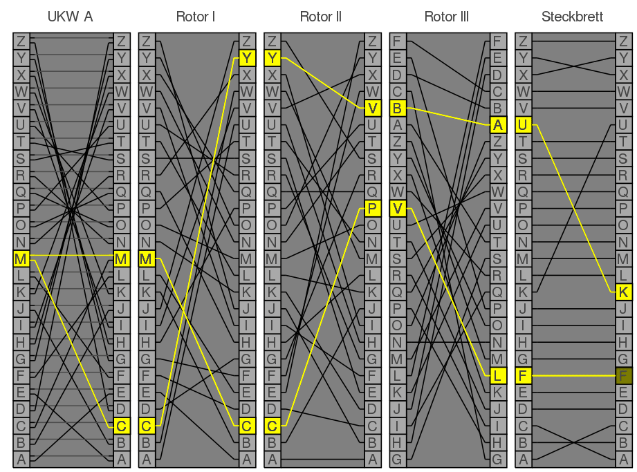

Biography Alan Mathison Turing was an English mathematician, computer scientist. Turing was highly influential in the development of theoretical computer science, during the second part of the 20th century. He provided a formalisation of the concepts of algorithm and computation with the Turing machine. He is considered to be the father of artificial intelligence.

Representation of the Enigma machine with only three rotors Alan Turing is particulary knew to have helped to crack the Enigma machine with his team in Bletchley Park. Enigma machine was the device used by the German military command to encode strategic messages before and during World War II. This machine scrambles messages one letter at a time using a complex network of electrical wires. The operator passes an electric current through the machine by pressing a key. The path of the current is first redirected to the wiring board, which consists of 26 electrical outlets (think of the letters A through Z in the alphabet). The wires connect different cilinders in order to replace one letter with another.
Like the machines as differents cilinders, usually 5, but 8 for the U-bots and the marine, and that the enigma machine used to work with 3 of them, the number of different possibilities to code each letters was practically infinite (1,59*10^20). From 1942, the german marine began to use a machine even more hard to crack : with 4 rotors ! With all his team, composed by many important scientifists, like Gordon Welchman, Hugh Alexander, Bill Tutte, and Stuart Milner-Barry, and with the work did by polish scientifists that were already work on Enigma's crack before the war, he discovert some breaches in the Enigma codage. For exemple, a letter can't be code by the same letter (A won't stay A after passing through the machine). Step by step, the team create "Bombs", enormous computers that try one by one every possibilities. It's one of the ancestor of the data-analysis.